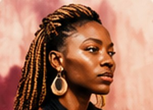
Photography
Amina Tandy
Nairobi, Kenya
Portraits and street stories shot in natural light.
View profile →hover the letters, stickers and shapes
Made forphotographers.designers.illustrators.filmmakers.writers.3D artists.
A home for African creatives to showcase their work, discover opportunities and connect with people who value their craft.
Read the Creative Wall ↓ Move your mouse to leave footprints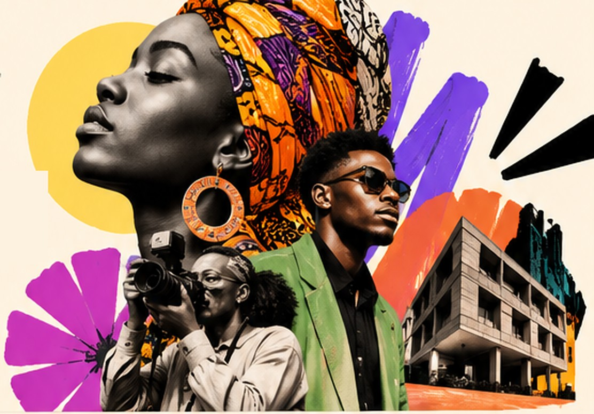
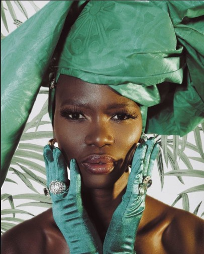
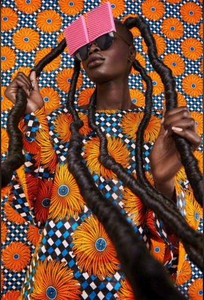
SanaaThe Creative Wall
hover “chapters”
From roots, to the runway, to the remix, to tomorrow. Hover any work to meet its maker, then open it to see the full project.
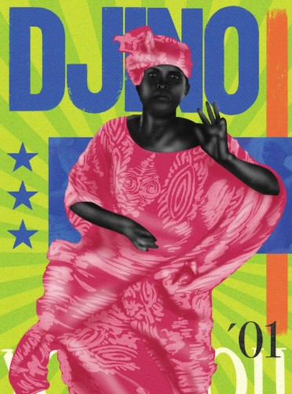
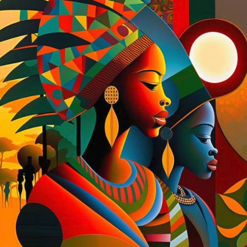
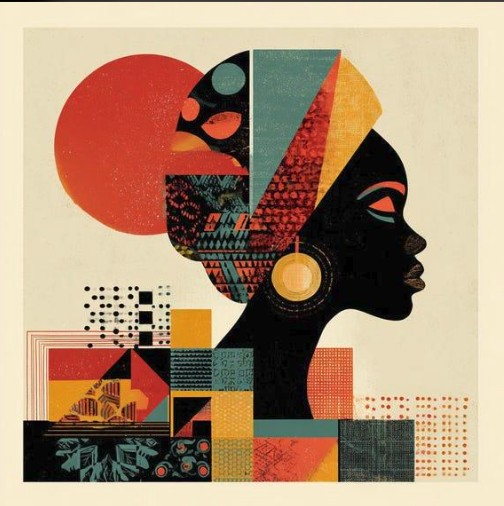
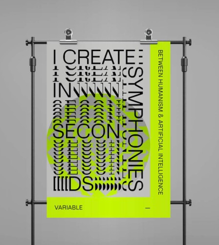
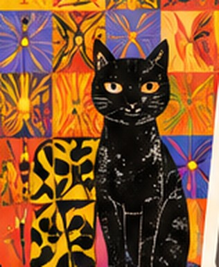
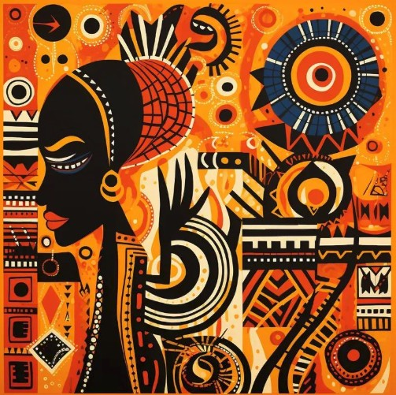
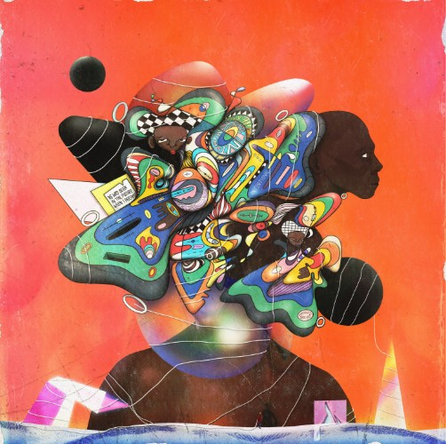
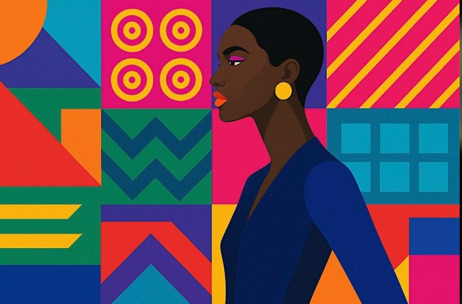
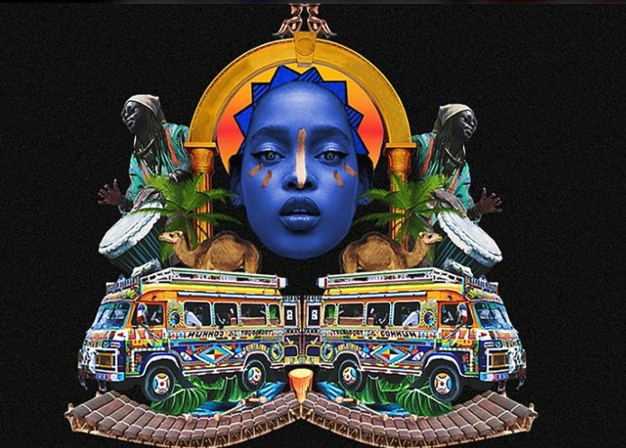
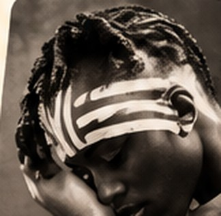
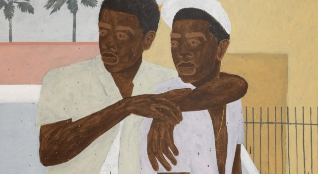
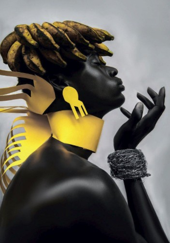
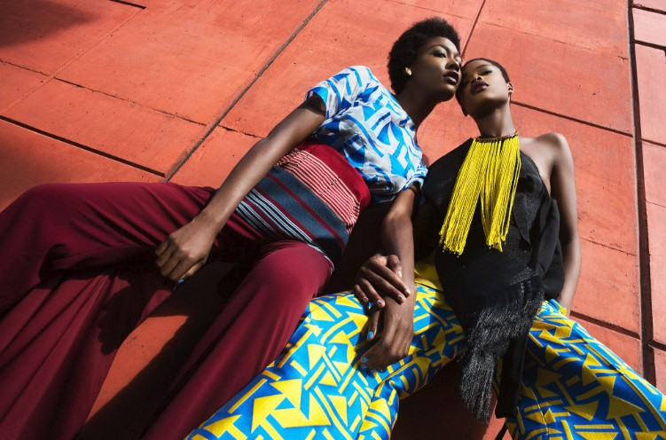
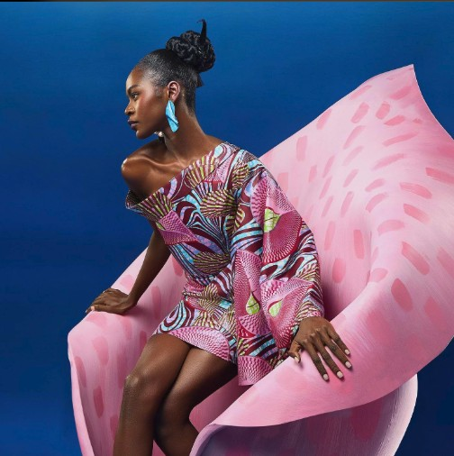
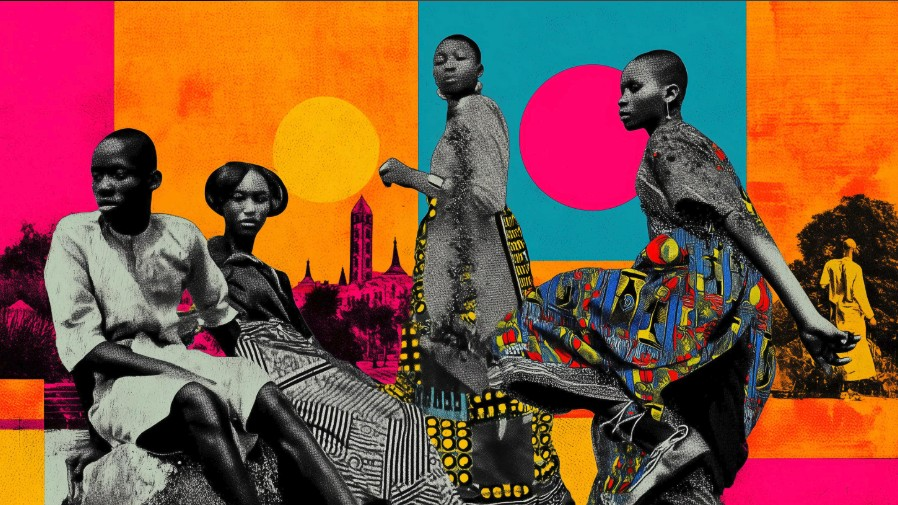
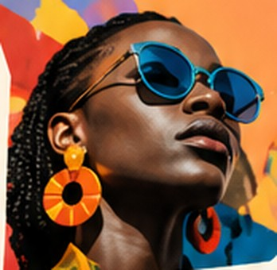
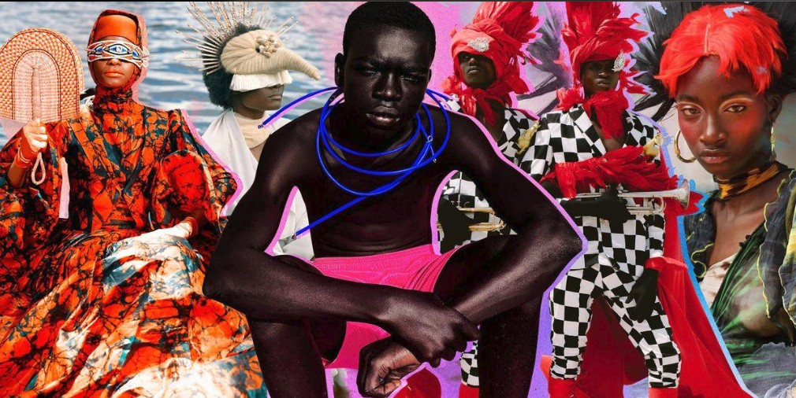
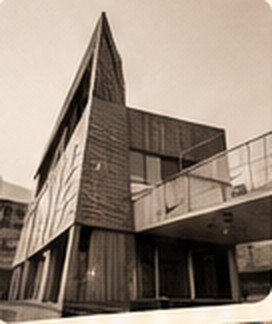
sanaaThe Creative Wallhover a frame, it swings
Different works of art.
One wall.
Showing all 22 works across 8 disciplines
It starts with heritage: pattern, profile and memory, redrawn by a new generation.
Then the story walks into the light. Fabric, hair and attitude become the canvas.
Style is a story told without words.
Chapter 02 · Fashion & photography
Next, artists cut, paste and collide eras into something new.
And it keeps moving: digital worlds, experimental type, words and paint that look forward.
Meet the creatives
Swipe to meet more creatives →

Nairobi, Kenya
Portraits and street stories shot in natural light.
View profile →Lagos, Nigeria
Bold characters for books, brands and album art.
View profile →Cape Town, South Africa
Headwear and textiles rooted in colour and craft.
View profile →Accra, Ghana
Surreal 3D worlds for music videos and motion.
View profile →hover “creative.” and the cards
Pick a discipline to jump straight to that work on the wall.
hover “SANAA” and the cards
Give your work visibility.
Find inspiring creatives and projects.
Build meaningful creative relationships.
Find opportunities to develop your craft.
Showcase your portfolio, build your presence, connect with collaborators and discover opportunities.
Discover creative talent, explore portfolios and connect with people who can bring ideas to life.
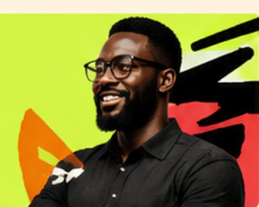
The SANAA story
Across the continent, illustrators, photographers, designers, filmmakers and writers are making extraordinary work. Too often it disappears into a social feed, missed by the clients, brands and collaborators who need it most.
The problem was never talent. It is the gap between talent, visibility and opportunity. Sanaa, Swahili for art, exists to close it.
hover the stickers
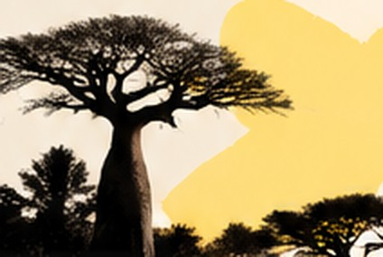
Bring your ideas, your work and your perspective. Find your place in the SANAA creative community.
hover the tiles